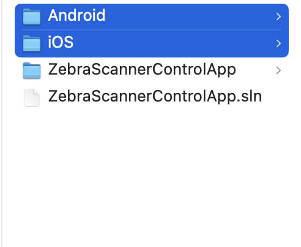

Overview
This section provides step-by-step instructions on developing .NET MAUI Framework based Scanner applications for Android and iOS with Microsoft Visual Studio Code.
Development Environment
Please refer the instructions provided below for configuring development environment in the respective platform.
Microsoft Windows
- Visual Studio Code with the .NET MAUI extension installed and configured on .NET 9 environment. Refer .NET MAUI page for more details.
- Additionally, follow the instructions below on link establishment with a MAC. https://learn.microsoft.com/en-us/dotnet/maui/ios/pair-to-mac?view=net-maui-9.0
macOS
- A mac that is compatible with the latest version of Xcode is required as the prerequisites. Review minimum requirements and supported SDKs for more details.
- Install the latest version of Xcode.
- Visual Studio Code with the .NET MAUI extension installed and configured on .NET 9 environment. Refer .Net MAUI page for more details.
Create a .NET MAUI Project with Visual Studio Code.
- Open Visual Studio Code, with the .NET MAUI extension installed and configured on .NET 9 environment.
-
Use the Solution Explorer's "Create .NET Project" button or Command Palette's ".NET: New Project."
Figure 1: Create .NET project
-
Choose the .NET MAUI project type.
 Figure 2: Select the project type as .NET MAUI
Figure 2: Select the project type as .NET MAUI
-
Provide a project name and create the project.
Figure 3: Add a name for the project
-
Create two directories namely “Android” and “iOS” at the same location as the project solution (*.sln) file.
Figure 4: Folder Structure
-
Add the provided Android binding dll(ScannerSDKAndroidBinding.dll), Android wrapper dll (ZebraBarcodeScannerSDK.dll) and Android native Scanner SDK(barcode_scanner_library_v2.6.25.0-release.aar) inside the Android directory.
Figure 5: Folder Structure (Android)
-
Add the provided iOS binding dll (ScannerSDKiOSBinding.dll), iOS wrapper dll (ZebraBarcodeScannerSDK.dll) and the resource folder(ScannerSDKiOSBinding.resources) which includes the iOS native Scanner SDK inside the iOS directory.
Add the provided Android binding dll(ScannerSDKAndroidBinding.dll), Android wrapper dll (ZebraBarcodeScannerSDK.dll) and Android native Scanner SDK(barcode_scanner_library_v2.6.25.0-release.aar) inside the Android directory.
 Figure 6: Folder Structure (iOS)
Figure 6: Folder Structure (iOS)
-
Open created project on Visual Studio code and select the project file.
Figure 7: Folder Structure (iOS)
-
Add the below lines inside the project file to add the libraries as references for the project.
<ItemGroup> <Reference Include="ScannerSDKAndroidBinding" Condition="'$(TargetFramework)' == 'net9.0-android'"> <HintPath>..\Android\ScannerSDKAndroidBinding.dll</HintPath> </Reference> <Reference Include="ZebraBarcodeScannerSDK" Condition="'$(TargetFramework)' == 'net9.0-android'"> <HintPath>..\Android\ZebraBarcodeScannerSDK.dll</HintPath> </Reference> <Reference Include="ScannerSDKiOSBinding" Condition="'$(TargetFramework)' == 'net9.0-ios'"> <HintPath>..\iOS\ScannerSDKiOSBinding.dll</HintPath> </Reference> <Reference Include="ZebraBarcodeScannerSDK" Condition="'$(TargetFramework)' == 'net9.0-ios'"> <HintPath>..\iOS\ZebraBarcodeScannerSDK.dll</HintPath> </Reference> </ItemGroup> -
Add the below lines inside the project file to add the libraries as references for the project.
Figure 8: Open Info.plist file
-
Add the following background modes under UIBackgroundModes key in the Info.plist.
- App communicates with an accessory.
- App communicates using CoreBluetooth.
- App shares data using CoreBluetooth.
<key>UIBackgroundModes</key> <array> <string>external-accessory</string> <string>bluetooth-central</string> <string>bluetooth-peripheral</string> </array> -
Add following entries under UISupportedExternalAccessoryProtocols key in the Info.plist.
- com.zebra.scanner.SSI
- com.motorolasolutions.CS4070_ssi
<key>UISupportedExternalAccessoryProtocols</key> <array> <string>com.zebra.scanner.SSI</string> <string>com.motorolasolutions.CS4070_ssi</string> </array> -
Set Property List Key NSBluetoothAlwaysUsageDescription to use the device's Bluetooth interface. Description value should be a string.
Example: "Zebra Scanner Control App uses Bluetooth to find, connect and communicate with nearby Zebra devices. Please grant access".
<key>NSBluetoothAlwaysUsageDescription</key> <string>Zebra Scanner Control App uses Bluetooth to find, connect and communicate with nearby Zebra devices. Please grant access.</string> -
Update AndroidManifest.xml with all the required permissions for Android.
<uses-permission android:name="android.permission.ACCESS_COARSE_LOCATION" /> <uses-permission android:name="android.permission.ACCESS_FINE_LOCATION" /> <uses-permission android:name="android.permission.BLUETOOTH" android:maxSdkVersion="30" /> <uses-permission android:name="android.permission.BLUETOOTH_ADMIN" android:maxSdkVersion="30" /> <uses-permission android:name="android.permission.BLUETOOTH_SCAN" android:usesPermissionFlags="neverForLocation" /> <uses-permission android:name="android.permission.BLUETOOTH_CONNECT" /> <uses-permission android:name="android.permission.BLUETOOTH_PRIVILEGED" /> -
Implement necessary run time permissions.
//Check status of Android runtime permissions private async Task<bool> CheckPermissions() { PermissionStatus bluetoothStatus = await CheckBluetoothPermissions(); return IsGranted(bluetoothStatus); }//Checking the permission status on version vise private async Task<PermissionStatus> CheckBluetoothPermissions() { PermissionStatus bluetoothStatus = PermissionStatus.Granted; if (DeviceInfo.Platform == DevicePlatform.Android) { if (DeviceInfo.Version.Major >= 12) { bluetoothStatus = await CheckPermissions<BluetoothPermissionsUpper>(); } else { bluetoothStatus = await CheckPermissions<BluetoothPermissionsLower>(); } } return bluetoothStatus; }//Check status for all the permissions at once private async Task<PermissionStatus> CheckPermissions<TPermission>() where TPermission : Permissions.BasePermission, new() { PermissionStatus status = await Permissions.CheckStatusAsync<TPermission>(); if (status != PermissionStatus.Granted) { status = await Permissions.RequestAsync<TPermission>(); } return status; }//Get permission grant status private static bool IsGranted(PermissionStatus status) { return status == PermissionStatus.Granted || status == PermissionStatus.Limited; }//Permissions for upper Android versions internal class BluetoothPermissionsUpper : BasePlatformPermission { public override (string androidPermission, bool isRuntime)[] RequiredPermissions => new List<(string permission, bool isRuntime)> { (global::Android.Manifest.Permission.BluetoothAdvertise, true), (global::Android.Manifest.Permission.BluetoothScan, true), (global::Android.Manifest.Permission.BluetoothConnect, true), (global::Android.Manifest.Permission.AccessFineLocation, true), (global::Android.Manifest.Permission.PostNotifications, true), }.ToArray(); }//Permissions for lower Android versions internal class BluetoothPermissionsLower : BasePlatformPermission { public override (string androidPermission, bool isRuntime)[] RequiredPermissions => new List<(string permission, bool isRuntime)> { (global::Android.Manifest.Permission.AccessFineLocation, true), (global::Android.Manifest.Permission.AccessCoarseLocation, true) }.ToArray(); }
Wrapper APIs
Namespace
Import the Scanner SDK namespace before making API calls.
using ZebraBarcodeScannerSDK;
SDK Version
Version information could be queried as follows.
//Create an instance of the ScannerSDK
ScannerSDK scannerSdk = new ScannerSDK();
//Get the scanner SDK version
string version = scannerSdk.Version;
Set Operation Mode
Set the operation mode of the reader.
//Create an instance of the Scanners
Scanners scanners = scannerSdk.ScannerManager;
//Set Operation Mode for Scanner SDK
scanners.SetOperationMode(OpMode.OPMODE_MFI);
The support is given for the following operation modes,
iOS
- OPMODE_MFI
- OPMODE_BTLE
- OPMODE_MFI_BTLE
Android
- OPMODE_SSI
- OPMODE_SNAPI
- OPMODE_BTLE
Enable Available Scanner Detection
Enable/Disable option for Enable Available Scanner Detection API.
// Enable available scanner detection for SDK.
scanners.EnableAvailableScannersDetection(true);
// Disable available scanner detection for SDK.
scanners.EnableAvailableScannersDetection(false);
Subscribe for Events
Subscribe for events required by the SDK user.
// Subscribe to scanner appearance and scanner disappearance events.
scanners.SubscribeForEvents((int)Notifications.EVENT_SCANNER_APPEARANCE | (int)Notifications.EVENT_SCANNER_DISAPPEARANCE);
Available events.
- EVENT_SCANNER_APPEARANCE
- EVENT_SCANNER_DISAPPERANCE
- EVENT_SESSION_ESTABLISHMENT
- EVENT_SESSION_TERMINATION
- EVENT_BARCODE
- EVENT_RAW_DATA
Get Available Scanner List
Query currently available scanner list as follows.
Scanners paired with the device via MFI mode are returned by the SDK if the operation mode is set to "OPMODE_MFI".
Scanners which are discoverable to the device are returned by the SDK if the operation mode is set to "OPMODE_BTLE".
// Get available scanners list
List<Scanner> discoveredScannerList = scanners.GetAvailableScanners();
Connect to a Scanner
There are two methods to establish a connection with a scanner,
- Using Scan-To-Connect (STC) Pairing Barcode.
- Using the Manual pairing method.
Connect a Scanner Using Scan-To-Connect (STC) Pairing Barcode
Table 1 Pairing Barcode Type Attribute Values
| Description | Attribute Values |
|---|---|
| STC type | BARCODE_TYPE_STC |
Table 2 Pairing Barcode Type Attribute Values
| Description | Attribute Values |
|---|---|
| SSI over Bluetooth Low Energy | SSI_BT_LE |
| SSI over Bluetooth Classic (Android Only) | SSI_BT_CRADLE_HOST |
Table 3 Pairing Barcode Type Attribute Values
| Description | Attribute Values |
|---|---|
| Keep current settings | KEEP_CURRENT |
| Set factory default settings | SET_FACTORY_DEFAULTS |
The following code example demonstrates how to get the STC pairing barcode.
sdkInstance = new ScannerSDK();
imageData = sdkInstance.GetBluetoothParingBarcode(PairingBarcodeType.BARCODE_TYPE_STC, BluetoothProtocol.SSI_BT_LE, ScannerConfiguration.SET_FACTORY_DEFAULTS);
stcImage.Source = ImageSource.FromStream(() => new MemoryStream(imageData));
When the bluetooth protocol is SSI_BT_CRADLE_HOST bluetooth mac address is required as an additional parameter. This is only applicable for Android.
sdkInstance = new ScannerSDK();
string bluetoothAddress = "xx:xx:xx:xx:xx:xx";
imageData = sdkInstance.GetBluetoothParingBarcode(PairingBarcodeType.BARCODE_TYPE_STC, BluetoothProtocol.SSI_BT_CRADLE_HOST, ScannerConfiguration.KEEP_CURRENT, bluetoothAddress);
stcImage.Source = ImageSource.FromStream(() => new MemoryStream(imageData));
After scanning the STC pairing barcode, the scanner will be paired and get connected. Then the EVENT_SESSION_ESTABLISHMENT event gets triggered.
Connect a Scanner Using Manual Pairing Method
Connect to the first available scanner.
// Connect to a given scanner
discoveredScannerList[0].Connect();
Disconnect from a Scanner
Disconnect a scanner.
// Disconnect from a given scanner
discoveredScannerList[0].Disconnect();
Enable/Disable Bluetooth scanner discovery
The enable/disable of Bluetooth scanner discovery process is handled as below.
// Enable the state of Bluetooth scanner discovery
scanner.EnableBluetoothScannerDiscovery(true);
// Disable the state of Bluetooth scanner discovery
scanner.EnableBluetoothScannerDiscovery(false);
Enable/Disable Scanner
Enable/disable the connected barcode scanner.
// Enable a connected barcode scanner. 'scanner' is a connected Scanner object
scanner.EnableScanner();
// Disable a connected barcode scanner. 'scanner' is a connected Scanner object
scanner.DisableScanner();
Enable Scanner Auto Re-Connection
The enabling/disabling of automatic re-connection of the scanner is accomplished here.
// Enable automatic scanner re-connection. 'scanner' is a connected Scanner object
scanner.EnableAutoReconnection(true);
// Disable automatic scanner re-connection. 'scanner' is a connected Scanner object
scanner.EnableAutoReconnection(false);
Get Scanner Asset Information
A connected scanner Asset information can be retrieved through this API.
// Get scanner asset information from a connected scanner
AssetInformation assetInformation = scanner.ScannerAssetInformation();
Console.WriteLine("Configuration name :" + assetInformation.ConfigurationName);
Console.WriteLine("Serial number :" + assetInformation.SerialNumber);
Console.WriteLine("Model number :" + assetInformation.ModelNumber);
Console.WriteLine("Firmware version :" + assetInformation.FirmwareVersion);
Console.WriteLine("Manufactured date" + assetInformation.ManufacturedDate);
Enable/Disable pick list mode
The enable/disable of pick list mode can be achieved with the following API.
// Enable pick list mode
scanner.EnablePickListMode();
// Disable pick list mode
scanner.DisablePickListMode();
Enable/Disable Symbology
This will enable/disable symbology. Appendix : Table 1 includes the symbology attribute values.
// Enable/Disable symbology
void SymbologyEnableDisable(string[] symbologyIdList, bool symbologyStatus)
{
string symbologyIdAttributeList = "";
foreach (string symblogyId in symbologyIdList)
{
symbologyIdAttributeList += "<attribute>" +
"<id>" + symblogyId + "</id>" +
"<datatype>F</datatype>" +
"<value>" + symbologyStatus + "</value>" +
"</attribute>";
}
string inXml = "<inArgs>" +
"<scannerID>" + connectedScanner.Id + "</scannerID>" +
"<cmdArgs>" +
"<arg-xml>" +
"<attrib_list>" +
symbologyIdAttributeList +
"</attrib_list>" +
"</arg-xml>" +
"</cmdArgs>" +
"</inArgs>";
connectedScanner.ExecuteCommand(OpCode.RSM_ATTRIBUTE_SET, inXml);
}
// Symbology list. Refer Table 1 in the Appendix of .NET MAUI Wrapper for Scanner SDK for symbology attribute values.
string[] symbologyIdList = { "1", "2", "8" };
// Enable a symbology
SymbologyEnableDisable(symbologyIdList, true);
// Disable a symbology
SymbologyEnableDisable(symbologyIdList, false);
This will disable all symbologies.
// Disable all symbologies
scanner.DisableAllSymbologies();
LED Blink On/Off
This code snippet will start/stop blinking the LED on the reader.
// LED On
string inXml = "<inArgs>" +
"<scannerID>" + connectedScanner.Id + "</scannerID>" +
"<cmdArgs>" +
"<arg-int>85</arg-int>" +
"</cmdArgs>" +
"</inArgs>";
connectedScanner.ExecuteCommand(OpCode.RSM_SET_ACTION, inXml);
// LED Off
string inXml1 = "<inArgs>" +
"<scannerID>" + connectedScanner.Id + "</scannerID>" +
"<cmdArgs>" +
"<arg-int>90</arg-int>" +
"</cmdArgs>" +
"</inArgs>";
connectedScanner.ExecuteCommand(OpCode.RSM_SET_ACTION, inXml);
Get Battery Statistics
By listing the following attribute IDs in the inXml, the battery statistic data can be retrieved via the outXml.
Table 4 Battery Statistic Attribute Values
| Description | Attribute Values |
|---|---|
| Voltage | 30010 |
| Current | 30011 |
| State of Charge | 30012 |
| State of Heath Meter | 30013 |
| Temperature Present | 30016 |
| Model Number | 30017 |
| Manufacture Date | 30018 |
| Firmware Version | 30019 |
| Full Charge Capacity | 30020 |
| Charge Cycle Consumed | 30021 |
| Remaining Time To Complete Charging | 30023 |
| Temperature Highest | 30024 |
| Temperature Lowest | 30025 |
| Charge Status | 30026 |
| Remaining Capacity | 30027 |
| Design Capacity | 30029 |
| Serial Number | 30030 |
// Get battery statistics
void getBatteryStatistics(string[] batteryStatisticsAttributesIDs)
{
string batteryStatusAttributes = "";
for (int i = 0; i < batteryStatisticsAttributesIDs.Length; i++)
{
if (i == batteryStatisticsAttributesIDs.Length - 1)
{
batteryStatusAttributes += batteryStatisticsAttributesIDs[i];
}
else
{
batteryStatusAttributes += batteryStatisticsAttributesIDs[i] + ",";
}
}
//In put xml
string inXml = "<inArgs>" +
"<scannerID>" + connectedScanner.Id + "</scannerID>" +
"<cmdArgs>" +
"<arg-xml>" +
"<attrib_list>" +
batteryStatusAttributes +
"</attrib_list>" +
"</arg-xml>" +
"</cmdArgs>" +
"</inArgs>";
//Out put result
string outXml = connectedScanner.ExecuteCommand(OpCode.RSM_ATTRIBUTE_GET, inXml);
Console.WriteLine("Get Battery Statistics Result : ", outXml);
}
// Refer Table 5 for battery statistics attribute ids
string[] batteryStatusAttributesIdList = {"30017","30018","30019","30029","30030"};
getBatteryStatistics(batteryStatusAttributesIdList);
Firmware Update Event
// Subscribe for the FirmwareUpdate event
scanners.FirmwareUpdate += FirmwareUpdate;
// Event handler for firmware update.
private async void firmwareUpdateEvent(FirmwareUpdateEvent firmwareUpdateEvent)
{
int maxRecord = firmwareUpdateEvent.MaxRecords;
int currentRecord = firmwareUpdateEvent.CurrentRecord;
double total = Convert.ToDouble(maxRecord);
double current = Convert.ToDouble(currentRecord);
double percentage = ((current / total) * 100);
Console.WriteLine("Firmware update percentage " + percentage);
}
Read Weight
These APIs are only supported in the MP6000/MP7000 scanners connected through SNAPI mode on Android. These can be used to achieve functions such as Enable/Disable Scale, Reset Scale, Zero Scale and Read weight.
// Enable the scale
String status = scanner.ScaleEnable();
// Disable the scale
String status = scanner.ScaleDisable();
// Reset the scale
String status = scanner.ResetScale();
// Set zero scale
String status = scanner.ZeroScale();
// Read Weight
WeightInfo weight = scanner.ReadWeight();